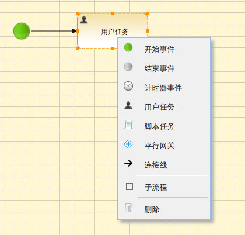

我们在起步已经介绍了XModeler Activiti扩展的基本使用方法，
这里我们将详细的进行描述。
首先在您的页面中加入XModeler及其依赖。
声明一个DIV（或者其他DOM），作为XModeler的容器。
最后在Onload事件中创建Bpmn对象。
此时，XModeler Activiti流程图对象已经创建完成，页面上会看到一个由浅黄色网格作为背景（可以修改style.css修改这个样式）的区域，这就是绘图区。您可以通过
上下文菜单绘制流程图。

XModeler提供的上下文菜单使用十分方便，但是在某些情况下我们仍然需要一个工具条。例如，如果您在一个子流程中加入某些节点，就必须使用工具条了。下面的例子中，
我们采用Bootstrap的导航条作为工具条。
首先，您要定义工具条：
然后，我们为菜单绑定事件。
每一个按钮事件都非常简单，实际上，工具条按钮点击的时候只是为XModeler设定了活动状态，这些活动状态包括：
- addStartEvent：添加一个开始事件。
- addEndEvent：添加一个结束事件。
- addUserTask：添加用户任务。
- addServiceTask：添加服务任务。
- addScriptTask：添加脚本任务。
- addParallelGateway：添加平行网关。
- addExclusiveGateway：添加互斥网关。
- addSubProcess：添加子流程。
- addTimerEvent：添加计时器事件。
- addConnection：开始绘制连接线，当进入绘制连接线状态时，首先点击连接线的开始节点，然后点击连接线的终止节点。
当使用工具条的时候，每次添加一个节点，XModeler的活动状态会重置，因此，如果您需要继续添加节点，就需要再次点击按钮。
图标
在XModeler Activiti BPMN所绘制的图形上，都有一些图标，这些图标定义在themes/default/images下，XModeler通过引用Icons对象使用
这些图标。因此如果修改图标，您需要修改themes/default/Icons.js文件。特别需要注意的是，Icons对象中
的图标路径都是相对于引用XModeler对象的页面，如果您希望在任何页面都可以正常显示图标，那么需要将Icons中的路径改为绝对路径，这样才能确保找到这些图标。
国际化
所谓的国际化，主要是定义各种节点的缺省名字(name)。
在src/impl/locale定义了两种语言，分别是中文和英文，如果您需要支持其他语言或者您不喜欢现有语言中的那些名字，可以在此基础上进行修改。
XModeler是一个纯JavaScript框架，不包含任何服务器端代码。但是，因为涉及到了Activiti，因此，需要将XModeler Activit扩展与Activiti服务器端整合的方法
进行详细的介绍。这里只是描述如何将Activiti Bpmn Model 与XModeler Json模型互相转换，并未涉及任何Activiti的概念和使用方法。
首先介绍如何将Activiti Bpmn Model转换为XModeler Json所需的Json，Activiti提供了BpmnModel对象，用于描述一个流程，这个对象可以根据processDefinitionId获得。
在服务器端我们只需要将BpmnModel对象转换为Json，并返回给浏览器就可以了。BpmnModel是一个非常复杂的对象，转换过程中会出现递归死循环的情况，需要程序员
认真处理。
得到BpmnModel对象之后，就可以使用任意Java MVC框架结合JacksonJson之类的工具，将它转换为Json数据，并返回给浏览器。需要注意的是
BpmnModel对象涉及大量的循环引用，转换的时候应避免死循环。
在JavaScript里面，我们调用服务器端的上述服务，就可以加载流程图了。
与加载BPMN相反，提交流程图是将客户端提交的Json数据转换为BpmnModel对象，并部署。BpmnModel对象十分复杂，幸好Activiti提供了BpmnJsonConverter类，
可以方便的将Json数据转换为BpmnModel对象。
上述代码可以在任意的Java MVC框架中调用，下面我们看Javascript代码。
click事件
click事件是最常用的事件，当点击XModeler绘图区域的时候响应。如果此时点击了绘图区域中的某个元素，
则事件响应函数的参数就是这个元素的对象。
参数列表：
- event，HTML事件对象。
- selections，如果没有选择任何元素，则为undefined；如果选择多个对象，则为数组；如果选择一个对象，则为该对象。
XModeler-Activity的每一个元素，包括XModoler-Activity本身，都包括3个主要属性。（其实还有很多属性，但是作为流程开发的属性这3个就够了。）
id
每一个节点都有一个id属性，它是唯一的，当新增一个节点的时候，XModeler会自动为该节点分配一个id。一般来说，没有必要修改这个属性。
name
每一个节点都有一个name属性，这个属性也是Activity节点的name。
raw
哇，这个属性对应着Actvity每一个节点的属性，也就是说，每一个节点的raw属性都是一个对象，而且各不相同，这个对象的属性是与Activiti Json Converter一致的。
在各个节点的实现类中，都提供一个rawObject函数，在这个函数中，定义了raw属性的格式，下面我们一个一个的介绍这些节点的属性(以及如何获取和设置这些属性)。
如何设置和获取流程图的属性
我们先介绍如何存取流程图本身的属性，设置和获取流程图属性需要一个Form，至于这个Form如何实现可以根据您的喜好，这里需要注意的是Form中输入框的name属性
和存取这些属性的方法。
将Form中的数据转换为Activiti所需数据：
将Activiti中的数据转换为Form数据：
如何设置和获取StartEvent的属性
首先你需要一个两个form，一个form代表Start Event基本属性，另一个代表着绑定在Start Event的表单项。
将form中的数据提取出来，组成符合Activity StartEvent 节点要求的对象格式。
将Activity StartEvent 节点数据加载到form中。
如何设置和获取UserTask的属性
UserTask是最常用的节点，属性也比较复杂，好在我们不必结束这些属性的含义（看Activity文档和JsonConverter的例子），只是介绍如何将这些与Form绑定。